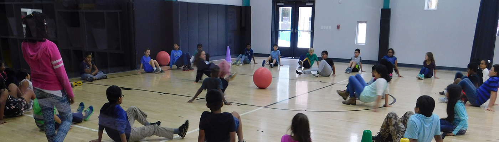
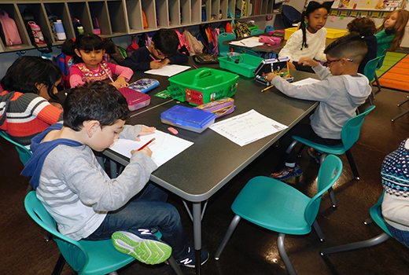
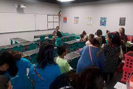

Inside the campus
School
Opened in 2017
BASIS San Antonio Primary Medical Center opened in 2017 and serves over 750 students in grades K–5. It is also the sister school to BASIS San Antonio Primary North Central. Both schools are proud to promote their students to BASIS San Antonio Shavano for grades 6–12. Our rigorous and accelerated curriculum engages students in hands-on, dynamic lessons across a well-balanced variety of courses, preparing them for success in middle school, high school, college, and beyond. We also emphasize respect and understanding by incorporating social and emotional growth objectives into our classes. With our dedicated faculty, bright and driven students, and supportive community, BASIS San Antonio Primary Medical Center will continue to be a leader in elementary education in Texas for years to come.



Inside
School Achievement 1

Record
The Basis Basketball Team reached the playoffs for the first time in Basis Medical Center history
School Achievement 2
Record
The Basis Soccer team scored eleven on their first playoff game, which is the highest scoring game in a playoff ever.
School Achievement 3
Record
The Basis Math Leauge team has 13 Math Leauge trophies, the most of any Basis school in San Antonio
What's New
-
New Teachers
These new teachers are better than the old ones. These teachers are dedicated to the students success, and won't let anything get in the way that the student's success. These teachers also care for life support. Just tell them if you are having personal issues, and they will assist you with ease. Lastly, these teachers will also helpm you learn better. Their deep explanations about everything you don't get will surely help you with all your struggles.